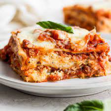

Lasagna Homemade

Easy/Quick Homemade Lasagna
For those missing missing their childhood favorite, or those
needing to make something quick before the wife gets home, this
recipe is for you. This cheese topped, meat filled, mouth
watering dish takes less than an hour to bake. Perfect for anyone
who slept through that alarm!
Ingredients
- 1.5 lb ground beef
- 1/4 lb ground pork
- 36 Oz of marinara sauce
- 3/4 tablesppon minced garlic
- 1 1/2 red onion
- 1/4 cup chopped basil
- 2 teaspoons salt
- 20 Oz ricotta cheese
- 3 Cups shredded mozzarella
- 1/8 Cup Shredded parmesan
- 1 Tablespoon dried parsley
- 1 Tablespoon Italian Seasoning
- 2 Tablespoons chopped Basil
- 2 large eggs
- 10 large Lasagna Noodles cooked al Dente or slighltly less so
Steps
- Preheat oven to 375 F.
- Bring cast iron skillet to medium-high heat via stove. Add
in beef and pork. Stir until both are fully cook. Drain
excess greece from pan.
- Add Garlic and Onion to pan. Stir for 1-3 minutes (do not allow onions to fully caramelize)
- Add marinara sauce, 1/4 cup basil, and 1 tsp salt to pan. Stir until combined
- In mixing bowl (medium size), combine ricotta, shredded
mozzarella, lemon juice, parsley, italian seasoning, parmesan,
basil, eggs, and 1 tsp salt. Stir until combined
- Cook lasagna noodles in large pot until al dente. Drain water and set aside
- Using a 10 by 13 glass pan, add about 1/4 of the meat sauce
and spread out evenly. Lay down 3 lasagna noodles. Top
with half of the cheese mixture followed by the same
amount of meat mixture.Layer with noodles. Repeat until
you have placed your last layer of noodles and top with the
remaining cheese sauce. Cover with extra mozzarella if needed
- Cover pan with aluminum foil
- Place pan on middle rack of oven, let cook for 40-45 minutes.
- Remove foil from pan and let cook an additional 15-20 minutes
(Ensure internal temperature of 165F throughout the pasta.
If still not at this temperature after 5 additional minutes,
lower stove temperature to 325 F and cook in 10 minute intervals.)
- Remove from oven and let cool. Serve in desired portions